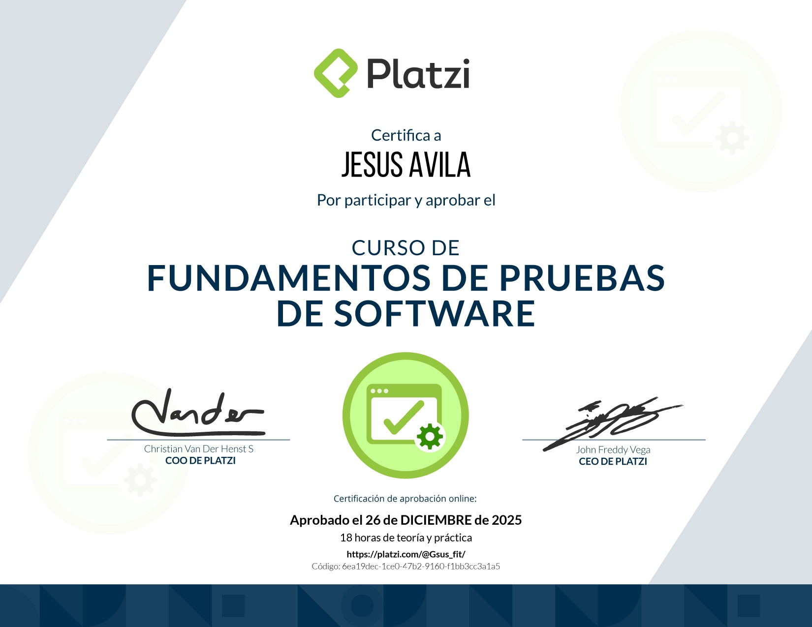

Sobre mí
Soy un desarrollador en formación con una fuerte mentalidad autodidacta y una curiosidad constante por entender cómo funcionan las cosas. Me especializo principalmente en el desarrollo backend con Python, trabajando con tecnologías como Flask, APIs REST, bases de datos y pruebas de software.
En poco tiempo he construido una base sólida en HTML, CSS y Python, aprendiendo de forma intensiva y aplicando cada nuevo conocimiento en proyectos reales. Me interesa especialmente crear sistemas claros, bien estructurados y que resuelvan problemas de forma práctica.
Disfruto aprender comparando conceptos, entendiendo los procesos detrás de cada tecnología y buscando siempre la forma más simple y elegante de implementar una solución.
Actualmente continúo ampliando mis habilidades en desarrollo backend, diseño de APIs y testing, con el objetivo de evolucionar hacia un perfil full stack y participar en proyectos que tengan impacto real en las personas.
Más allá del código, me motiva construir tecnología que sea útil, accesible y que pueda contribuir positivamente a la sociedad.
Educación
Instituto: Duoc UC
Carrera: Técnico Analista Programador
Año: 2025
Descripción: Programa técnico enfocado en el desarrollo de software y soluciones informáticas. La formación incluye programación, desarrollo de aplicaciones, bases de datos y análisis de requerimientos, preparando profesionales capaces de diseñar, construir e implementar sistemas tecnológicos para distintos tipos de organizaciones.
Estado: Congelado
Certificados
Python Essentials 1 - Cisco

Postman API Fundamentals Student Expert

Fundamentos de pruebas de software

English for IT Professionals

Desarrollar tu creatividad
Mis Stacks
Python
Lenguaje de programación interpretado que utilizo para desarrollar el backend de aplicaciones, automatización y scripting.
HTML
Lenguaje de marcado para estructurar el contenido de las páginas web y formular la base de mis proyectos front-end.
CSS
Herramienta para dar estilo, diseño y presentación a las interfaces web que construyo.
JavaScript
Lenguaje de programación que empleo para añadir interactividad y lógica en el cliente en mis aplicaciones web.
Git
Sistema de control de versiones que utilizo para gestionar código, colaborar y mantener historial de mis proyectos.
Postman
Herramienta para probar y documentar APIs REST durante el desarrollo de servicios web.
Pytest
Framework que utilizo para escribir pruebas automatizadas y asegurar la calidad del código Python.
Flask
Microframework en Python que empleo para construir APIs y aplicaciones web ligeras.
MySQL
Sistema de gestión de bases de datos relacionales que uso para almacenar y consultar información en mis proyectos.
Experiencia laboral
Experiencia práctica en desarrollo de software a través de proyectos personales enfocados en backend y aplicaciones web.
He diseñado y construido aplicaciones utilizando Python, trabajando con APIs, manejo de datos en formato JSON, lógica de servidor y estructuración de código para mantener proyectos claros, escalables y mantenibles.
Como desarrollador autodidacta, mi proceso de aprendizaje está basado en construir proyectos reales: desde la planificación de la lógica de la aplicación, hasta la implementación, pruebas y mejora continua del código.
Durante este proceso he trabajado con tecnologías como HTML, CSS y JavaScript para la interfaz web, junto con Python para el desarrollo backend, integrando bases de datos y estructurando endpoints para la comunicación entre sistemas.
Cada proyecto representa una oportunidad para aplicar buenas prácticas de programación, resolver problemas técnicos y mejorar continuamente la calidad del software que desarrollo.
Mis proyectos
CRUD de tienda
Proyecto con doble interfaz (cliente, administrador) CRUD (Crear, Leer, Actualizar, Eliminar) para una tienda en línea.
Tecnologías utilizadas:
- Python
Visitar proyecto